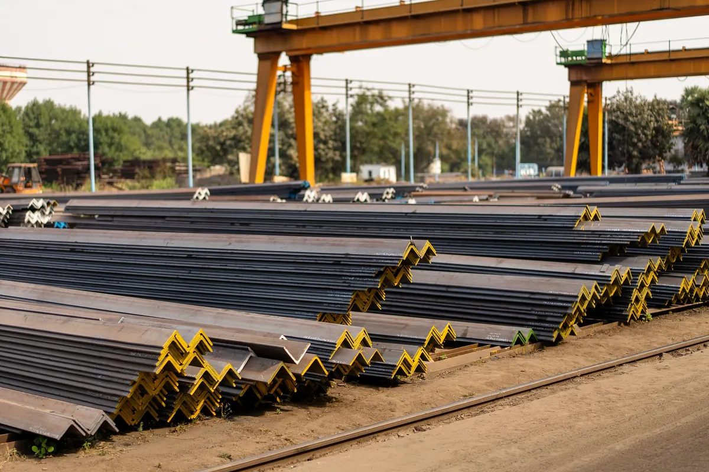
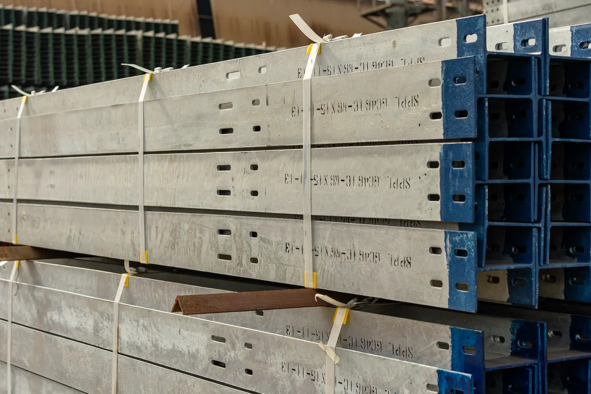

Comprar aço estrutural é decisão de projeto, não de balcão
Esta página trata do material: quais perfis, tubos e chapas a estrutura pede, em que aço, em que quantidade e como eles chegam à obra. A visão geral do serviço — do projeto à entrega da estrutura pronta — está na página de estruturas metálicas em Vitória ES. A transformação desse material em peça (corte, furação, solda, pintura) é assunto da fabricação de estruturas metálicas, e o içamento e a ligação em campo ficam na montagem de estruturas metálicas.
O erro mais comum na compra de aço é pedir cotação por "tonelada de estrutura" sem lista de materiais. Cada fornecedor imagina uma estrutura diferente, as propostas não se comparam, e a diferença aparece depois — em perfil trocado por outro mais leve, em aço sem certificado ou em sobra de barra que ninguém previu. Nosso ponto de partida é sempre o projeto: se ele já existe, levantamos o material a partir das pranchas; se não existe, o projeto estrutural vem antes.
Fornecemos de duas formas. Fornecimento isolado, para quem tem serralheria, caldeiraria ou equipe própria e precisa do material certo, identificado e com documentação. Ou dentro da obra completa, quando a Axial Engenharia faz projeto, fornecimento, fabricação e montagem com ART — caso de um galpão metálico ou de uma cobertura metálica para quadra. Atendemos Vitória, Vila Velha, Serra, Cariacica e toda a Grande Vitória.
Levantamento de material: da lista de materiais ao romaneio
O levantamento transforma o projeto em uma lista que o fornecedor consegue atender e que a obra consegue conferir. Ele passa por três documentos, e cada um tem uma função.
Lista de materiais
Sai das pranchas de fabricação: cada posição da estrutura com perfil, bitola, comprimento, quantidade, massa linear e massa total. É ela que diz quanto aço a estrutura realmente tem. Uma lista bem feita separa o que é perfil principal (pilares, vigas, tesouras), o que é secundário (terças, travessas de fechamento, contraventamentos) e o que é chaparia (chapas de base, ligações, enrijecedores), porque cada grupo é comprado de um jeito.
Plano de corte
Perfil e tubo são vendidos em barra de comprimento comercial, que varia conforme o produto e o fornecedor; chapa é vendida em formato padronizado. O plano de corte distribui as peças dentro das barras e das chapas para que a sobra seja a menor possível — e é ele, não a lista de materiais, que define quantas barras comprar. Peça de 6,20 m em barra de 6 m não existe: ou se muda o comprimento comercial, ou se prevê emenda no projeto.
Romaneio de entrega
É a relação do que efetivamente foi carregado em cada entrega: item, quantidade, peso e identificação de corrida. Na chegada à obra, confere-se o romaneio contra o material descarregado e contra a lista de materiais. Divergência se resolve no dia, com o caminhão ainda no pátio — não na semana da montagem.

Tipos de perfil e onde cada um entra na estrutura
A escolha do perfil é do projeto estrutural. O que cabe ao fornecimento é entregar exatamente o que foi especificado — e saber apontar quando uma troca é aceitável e quando exige nova verificação do calculista.
Perfis laminados W e HP
Perfis de abas paralelas produzidos em laminação a quente. O W é o perfil de uso geral para vigas e pilares de galpão, mezanino e estrutura de edifício; o HP, com alma e abas de espessura próxima, é usado em pilares e estacas. Têm dimensões padronizadas em catálogo, o que facilita compra, reposição e conferência.
Perfis soldados VS, CS e CVS
Montados a partir de chapas soldadas, com a série padronizada pela ABNT NBR 5884: VS para vigas, CS para colunas e CVS para peças que trabalham como viga e coluna. Entram quando a altura ou a carga passam do que o laminado oferece, ou quando o projeto pede seção variável. São fabricados sob encomenda, então o prazo conta desde o pedido.
Perfis formados a frio U, Ue, Z e cartola
Dobrados a partir de chapa fina, dimensionados pela ABNT NBR 14762 e padronizados pela ABNT NBR 6355. São leves e econômicos para terças, travessas de fechamento, montantes e estruturas de pequeno vão. O U enrijecido (Ue) é o perfil típico de terça de cobertura. Por terem parede fina, são sensíveis a amassamento no transporte e a corrosão quando armazenados mal.
Tubos, cantoneiras e chapas
Tubos redondos, quadrados e retangulares entram em pilares esbeltos, treliças, guarda-corpos e coberturas aparentes. Cantoneiras de abas iguais ou desiguais aparecem em contraventamento, treliça leve, cantoneira de ligação e acabamento. Chapas grossas viram chapa de base, chapa de ligação, enrijecedor e cartela; chapa xadrez vira piso de plataforma e escada.
Terças, telhas e acessórios de cobertura
Terças em Ue ou Z, correntes, tirantes, telha trapezoidal ou ondulada, telha termoacústica, cumeeira, rufos e calhas. O fornecimento de cobertura precisa casar o espaçamento das terças com o vão admissível da telha escolhida, e o comprimento da telha com o caimento do telhado.
| Material | Uso típico | Ponto de atenção na compra |
|---|---|---|
| Perfil W / HP laminado | Pilares, vigas, mezaninos | Conferir bitola e massa linear — perfis de mesma altura têm pesos diferentes |
| Perfil soldado VS / CS / CVS | Vigas e pilares de grande porte | Encomenda com antecedência e inspeção da solda de composição |
| Perfil U / Ue formado a frio | Terças, travessas, montantes | Espessura da chapa e proteção contra corrosão |
| Tubo estrutural | Treliças, pilares esbeltos, estruturas aparentes | Espessura de parede e se é com ou sem costura, conforme o projeto |
| Cantoneira | Contraventamento, ligações, treliça leve | Abas iguais ou desiguais e espessura |
| Chapa grossa | Bases, ligações, enrijecedores | Plano de corte para aproveitar o formato da chapa |
| Telha e acessórios | Cobertura e fechamento | Vão admissível entre terças e comprimento por água |
Aços usuais e certificado da usina: ASTM A36 e A572 Grau 50
O projeto especifica o aço junto com o perfil, e os dois não se separam: uma viga calculada em aço de maior resistência pode não passar se for comprada em aço comum. Por isso a lista de materiais traz sempre a norma do aço ao lado da bitola.
- ASTM A36: aço-carbono estrutural de uso geral, com limite de escoamento mínimo de 250 MPa. É o aço corrente de chapas, cantoneiras e peças de ligação.
- ASTM A572 Grau 50: aço de alta resistência e baixa liga, com limite de escoamento mínimo de 345 MPa. É o aço usual dos perfis laminados W e HP e de perfis soldados onde o projeto quer reduzir peso.
- Aços resistentes à corrosão atmosférica: usados quando o projeto quer reduzir a manutenção de pintura; a especificação e o detalhamento precisam considerar essa escolha desde o início.
- Chapa fina para perfil formado a frio: aço-carbono laminado ou chapa zincada, com a espessura e o revestimento definidos no projeto de terças e fechamentos.
A substituição de um aço por outro — ou de um perfil por outro "equivalente" — só é feita com aval de quem calculou a estrutura, conforme a ABNT NBR 8800. Troca decidida no balcão para ganhar prazo é a forma mais rápida de perder a garantia técnica da obra.
Certificado da usina e rastreabilidade até a peça montada
Todo lote de aço estrutural sai da usina com um certificado de qualidade que identifica a corrida (o lote de fabricação), a norma do aço, a composição química e os resultados dos ensaios mecânicos. Esse documento é o que prova que o material entregue é o material especificado.
O certificado só vale se for possível ligar o papel ao aço. Por isso exigimos que perfis e chapas cheguem identificados — estampa, etiqueta ou marcação de corrida — e mantemos essa identificação no corte, para que cada peça fabricada continue associada ao seu lote. É o que sustenta o data book da obra, a ART e qualquer laudo técnico que venha a ser pedido depois: sem rastreabilidade, a resistência do aço vira suposição.
Quando o material chega sem certificado, ou com certificado que não bate com a marcação, a peça não entra na estrutura. Em caso de dúvida sobre material já estocado, a alternativa é ensaio de laboratório — mais caro e mais lento do que exigir o documento na compra.

Barra inteira ou peça cortada e furada: perdas e aproveitamento
O mesmo material pode ser fornecido em dois estados, e a escolha mexe no custo e no prazo da obra.
Barra inteira
Faz sentido para quem tem oficina e vai fabricar por conta própria. A perda de material fica com quem corta — e depende diretamente do plano de corte. Sobra de barra comprida costuma voltar como peça pequena (cantoneira de ligação, enrijecedor, calço); sobra curta vira sucata. Comprar sem plano de corte é comprar sobra.
Peça já cortada e furada
O material sai da fabricação com comprimento final, furação de ligação e marca de montagem, pronto para parafusar ou soldar na obra. A perda fica embutida na fabricação, o pátio da obra recebe só o que vai montar e o risco de erro de medida em campo cai. É o caminho natural quando a fabricação é feita pela mesma equipe que levantou o material.
Em qualquer dos dois casos, a comparação honesta entre propostas é por peso da lista de materiais mais perdas previstas, com o mesmo aço e a mesma bitola — não por preço de quilo isolado.
Entrega por etapa e armazenamento na obra
Descarregar a estrutura inteira no primeiro dia raramente é a melhor ideia. O canteiro fica tomado, o material fica mais tempo exposto e aumenta a chance de uma peça ser danificada ou usada no lugar errado. A entrega por etapa acompanha o cronograma de montagem: primeiro chumbadores e bases, depois pilares e vigas, depois terças, contraventamentos e cobertura.
Na obra, alguns cuidados preservam o material até a montagem:
- Nada direto no chão: perfis sobre calços de madeira, com espaço para ventilar e sem contato com terra ou poça;
- Leve inclinação: para a água escorrer e não empoçar dentro de perfil U ou entre as abas;
- Galvanizado seco e ventilado: feixe de perfil zincado molhado e abafado forma oxidação branca na superfície;
- Telhas cobertas e inclinadas: água parada entre telhas empilhadas mancha e ataca o revestimento;
- Identificação à vista: marca de montagem e etiqueta voltadas para fora, feixes separados por etapa;
- Movimentação com cinta: corrente e garfo sem proteção amassam perfil formado a frio e arrancam pintura.
Na Grande Vitória, com maresia em boa parte dos bairros, material estocado sem proteção por semanas já começa a oxidar antes da montagem. Esse é um dos motivos pelos quais a entrega por etapa costuma sair mais barata no fim — e o tratamento de superfície e a pintura, quando o ambiente é agressivo, seguem os critérios que aplicamos em patologias e corrosão estrutural.
Quando o fornecimento faz parte de uma obra em estrutura metálica completa, o cronograma de entrega é montado junto com o de fabricação e o de montagem, e a conferência de romaneio fica com a nossa equipe no canteiro.
Perguntas frequentes sobre fornecimento de aço estrutural
Vocês fornecem só o material, sem fabricar nem montar?
Sim. Fazemos fornecimento isolado para serralherias, caldeirarias e construtoras com equipe própria: levantamos o material a partir do projeto, montamos o plano de corte e entregamos perfis, tubos e chapas identificados e com certificado de usina. Quando o cliente prefere, o mesmo material segue para fabricação e montagem pela nossa equipe, dentro de uma obra completa com ART.
Qual a diferença entre o aço ASTM A36 e o A572 Grau 50?
Os dois são aços estruturais, mas o A572 Grau 50 tem limite de escoamento mínimo mais alto — 345 MPa contra 250 MPa do A36. Por isso ele é o aço usual dos perfis laminados W e HP e permite estruturas mais leves. O A36 continua corrente em chapas, cantoneiras e peças de ligação. Qual usar em cada peça é definição do projeto estrutural, e trocar um pelo outro exige verificação do calculista.
Preciso exigir o certificado de qualidade da usina?
Sim. O certificado identifica a corrida, a norma do aço, a composição química e os ensaios mecânicos do lote, e é o que prova que o material entregue é o especificado no projeto. Ele só tem valor se o aço chegar marcado de forma que dê para ligar cada perfil ou chapa ao seu certificado. Sem isso, a resistência do material vira suposição e a ART da obra fica sem sustentação documental.
Quanto material se perde no corte das barras?
Depende do plano de corte, não de um percentual fixo. Perfis e tubos vêm em comprimentos comerciais e chapas em formatos padronizados; quando as peças da lista são distribuídas nas barras e chapas de forma planejada, a sobra cai e o que sobra de maior comprimento vira peça pequena de ligação. Comprar sem plano de corte, só pelo peso da lista, costuma resultar em barras faltando ou em sobra que ninguém usa.
Dá para receber o aço em etapas, conforme a montagem?
Sim, e na maioria das obras é o recomendado. A entrega acompanha o cronograma: chumbadores e bases, depois pilares e vigas, depois terças, contraventamentos e cobertura. O canteiro fica livre, o material passa menos tempo exposto à maresia e cada entrega é conferida pelo romaneio antes de o caminhão sair.
Aço estrutural na Grande Vitória
Fornecimento de perfis, tubos e chapas para obras e oficinas da região:
Já tem o projeto ou a lista de materiais?
Mande as pranchas ou a lista. Devolvemos o levantamento conferido e a proposta de fornecimento.